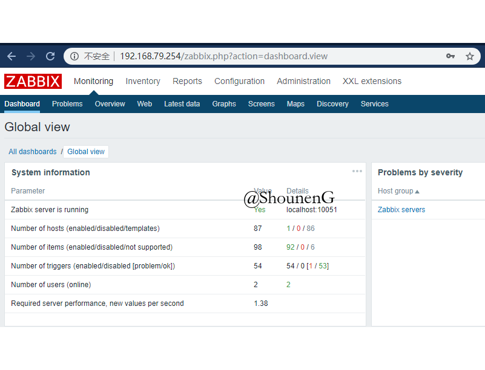
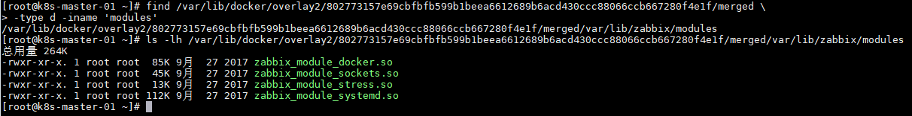
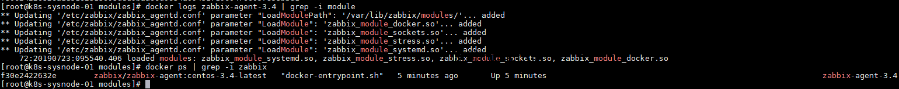
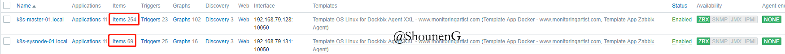

使用 Docker 部署 Zabbix 监控系统来监控主机状态
内容摘要：
使用 monitoring/zabbix-docker-monitoring 的镜像来部署 Zabbix，Zabbix 的
server、proxy、agent包括server的Mariadb，全部都是容器化部署。感兴趣的可以阅读 GitHub 原文以了解更多。使用这套工具主要目的是使用其提供的模块来监控宿主机的 Docker 的状态。
使用 Zabbix 监控 Docker 容器。 可用的CPU，内存，blkio，净容器指标和一些容器配置详细信息，例如 IP，名称，… Zabbix Docker模块本身支持 Docker 容器（包含Systemd），并且还应该支持一些其他容器类型（例如LXC）。 请随时测试并提供反馈/未解决的问题。 该模块侧重于性能，请参阅模块与用户参数脚本一节。
Dockbix（Docker化Zabbix-server）
Zabbix agent（使用Docker部署Zabbix-agent）
部署 Dockbix
Dockbix XXL是一款预配置的容器化 Zabbix，可轻松实现Docker监控。 此Docker镜像包含标准Zabbix +其他XXL社区插件。 包括常规任务：自动导入Zabbix DB，自动导入Docker监控模板，Dockbix agent XXL的自动注册规则，…
下载 Dockbix 镜像
Dockbix的镜像包括：
monitoringartist/zabbix-db-mariadb
给
Zabbix用的Mariadb。monitoringartist/dockbix-xxl
Dockbix 本体。
下载这2个镜像：
docker pull monitoringartist/zabbix-db-mariadb
docker pull monitoringartist/dockbix-xxl另外，还需要下载 busybox 这个工具箱镜像创作一个容器：docker pull busybox
我们需要使用这个工具箱镜像单独创建一个容器命名为 “dockbix-db-storage”，作为 Dockbix 的数据库的 data-container。
使用卷(volume)的好处有很多，包括：
- 易于备份或迁移
- 可以使用
Docker CLI或DockerAPI管理卷 - 可以在多个容器之间更安全的共享卷
- 可以使用远程主机上的或云供应商的存储卷，可以加密卷内容或添加其他功能
- 可以通过容器预先添加内容到卷里
部署 Dockbix XXL
运行以下命令或者使用docker-compose命令：docker-compose up -d，配置文件如下：
以创建Dockbix所需的容器。
注意：
请根据自身情况修改具体内容。
直接使用 docker 命令则如下：
# Create data container with persistent storage in the /var/lib/mysql folder
docker run -d -v /var/lib/mysql --name dockbix-db-storage busybox:latest
# Start DB for Dockbix - default 1GB innodb_buffer_pool_size is used
# You might define your own password by changing 'my_password' to anything you want in "MARIADB_PASS=my_password" below.
docker run \
-d \
--name dockbix-db \
-v /backups:/backups \
-v /etc/localtime:/etc/localtime:ro \
--volumes-from dockbix-db-storage \
--env="MARIADB_USER=zabbix" \
--env="MARIADB_PASS=my_password" \
monitoringartist/zabbix-db-mariadb
# Start Dockbix linked to the started DB
docker run \
-d \
--name dockbix \
-p 80:80 \
-p 10051:10051 \
-v /etc/localtime:/etc/localtime:ro \
--link dockbix-db:dockbix.db \
--env="ZS_DBHost=dockbix.db" \
--env="ZS_DBUser=zabbix" \
--env="ZS_DBPassword=my_password" \
--env="XXL_zapix=true" \
--env="XXL_grapher=true" \
gself/customized-dockbix:v1.0
# Wait ~30 seconds for Zabbix initialization
# Zabbix web will be available on the port 80, Zabbix server on the port 10051
# Default credentials: Admin/zabbix输入http://YOUR_IP/，就可以看到Zabbix的登陆界面，初始密码如上述的 Admin/zabbix。
如下图：

Dockbix 日常管理工作
作为运维人员，免不了要做一些日常备份等管理工作，以下提供一些命令以供参考。
## Backup of DB Zabbix - configuration data only, no item history/trends
docker exec \
-ti dockbix-db \
/zabbix-backup/zabbix-mariadb-dump -u zabbix -p my_password -o /backups
## Full compressed backup of Zabbix DB
docker exec \
-ti dockbix-db \
bash -c "\
mysqldump -u zabbix -pmy_password zabbix | \
bzip2 -cq9 > /backups/zabbix_db_dump_$(date +%Y-%m-%d-%H.%M.%S).sql.bz2"
## DB data restore
# Remove Dockbix container
docker rm -f dockbix
# Restore DB data from the dump (all your current data will be dropped!!!)
docker exec -i dockbix-db sh -c 'bunzip2 -dc /backups/zabbix_db_dump_2017-28-09-02.57.46.sql.bz2 | mysql -uzabbix -p --password=my_password zabbix'
# Run Dockbix container again
docker run ...Dockbix 一些额外启动项
Dockbix 已经预设了 Java gateway、SNMP 支持，如果想开启，只需再启动时添加参数，以及如果想启用 SSL 也可以覆盖原本的启动配置来设置 Nginx 证书等。
Dockbix 额外功能
Dockbix 可选功能以及自定义配置的支持
另外还有一些可选功能可以通过启动时传递的环境变量来控制。
可选的和特定功能有关的环境变量：
| Variable | Default value | Description |
|---|---|---|
| XXL_searcher | true | enable/disable integrated Zabbix searcher project |
| XXL_zapix | false | enable/disable integrated Zapix project |
| XXL_grapher | false | enable/disable integrated Grapher project |
| XXL_api | true | enable/disable auto import of templates (.xml), API curl commands (.curl) or API scripts (.sh) located in path /etc/zabbix/api/<custom_folder> |
| XXL_apiuser | Admin | username used for API commands |
| XXL_apipass | zabbix | password used for API commands |
| XXL_analytics | true | enable/disable collecting of statistics via Google Analytics |
| XXL_updatechecker | true | enable/disable check of the latest Docker image - checks are executed in the user browser once per day |
还有更多可配置的选项可以通过环境变量来设置，详情可以参考作者的GitHub页面。
包括 Zabbix Web UI、Zabbix proxy 等的配置项，这些配置项也可以通过环境变量来配置到 Dockbix 中。
另外还可以使用卷来挂载配置文件、Zabbix的template、自定义脚本和SQL文件等。
部署 Zabbix-agent
Dockbix的作者monitorartist当然也发布了定制化过的Zabbix-agent镜像 – Dockbix Agent XXL，然而免费版不支持添加自定义的Userparameter脚本1。
以及不支持使用 docker exec 进入 Dockbix-agent 的容器实例等。
可以通过作者提供的Public test instance of Dockbix Agent XXL来体验Dockbix-agent的功能。
这些现实都是通过 Zabbix 原理或者 Docker 镜像的一些原理来实现的，比如阉割掉Userparameter脚本1这个功能，就是在镜像中去掉Zabbix-agnet的配置文件的相关配置项；限制 docker exec 进入 Dockbix-agent 的容器则是通过在容器中删除掉所有基础OS命令(sh, ls, pwd, cd …)来实现的。
当然，了解 Docker 的文件系统的人，还是可以找到 Dockbix-agent 镜像的内容，我使用 Zabbix 来监控的目的主要是做主机层面的监控，也就是包括：
- OS基础服务的状态
- OS性能（CPU、内存、磁盘等使用率）
- 关键用户服务（比如
Docker、kubelet）的状态 - 关键用户服务的性能
- 使用 Zabbix 来自动发现局域网主机、云服务商商部署的服务（AWS的EC2、S3、RDS、ElasticCache；阿里云的ECS等）
而 Dockbix 和一个“干净”的 Zabbix 相比，主要的区别在于作者加入了可以发现容器化应用的模块2和模板3。
这些自定义的功能使得我们可以在Zabbix上看到主机的 Docker 实例的状态（各种资源占用率等）。
我找了一台机器部署了 Dockbix-agent，并且找到了其内部使用的自定义模块，如下图：

由于模块属于原作者著作权内容，此处就补贴出共享连接了，大家要在自己的环境下用于商业目的，就各自承担风险了。
另外，对于 Docker 文件系统，我以前也总结过一点，有兴趣的可以看看，都是初级的知识……
我试着用官方的 Zabbix-agent 镜像导入 Dockbix-agent 的模块2，也成功了，只是在 Zabbix-web 上还看不到那些自定义模块自动发现出来的 item，估计是还需要修改其他的配置。
由于我并不是很在乎是否能在 Zabbix 中监控到 Docker 实例，所以这块先搁置不继续深究了。
下载 Zabbix-agnet 镜像
参考官方链接
部署 Zabbix-agent 容器
注意：
我这里使用的环境变量、挂载卷都是参考了 Zabbix-agent 官方链接 和 Dockbix Agent XXL 的文档来配置的，若要了解用途，最好就是实际部署一下 Dockbix-agent，再对比干净的 Zabbix-agent 的目录结构和内容。
在需要监控的主机上安装 Zabbix-agent：
docker run \ --name zabbix-agent-3.4 \ --net host \ --privileged \ -v /:/rootfs \ -v /var/run:/var/run \ -v /etc/zabbix/zabbix_agentd.d:/etc/zabbix/zabbix_agentd.d:ro \ -v /var/lib/zabbix/modules:/var/lib/zabbix/modules:ro \ -v /var/lib/zabbix/enc:/var/lib/zabbix/enc:ro \ --restart unless-stopped \ -e ZBX_HOSTNAME="`uname -n`" \ -e ZBX_SERVER_HOST="192.168.79.254" \ -e ZBX_LOADMODULE="zabbix_module_docker.so,zabbix_module_sockets.so,zabbix_module_stress.so,zabbix_module_systemd.so" \ -d zabbix/zabbix-agent:centos-3.4-latest
这里贴一下使用 Zabbix-agent 成功导入 Dockbix-agnent 的模板的确认信息。

以下2个主机，master运行的是Dockbix-agent，sysnode运行的是Zabbix-agent（原生），Zabbix-agent 导入了 Dockbix 中的模块，但是没有自动发现出其主机上所运行的 Docker 容器，可能是还有哪里需要配置吧……

脚注
See how to use “UserParameter Script” within Zabbix.
https://techexpert.tips/zabbix/zabbix-userparameter-script-on-linux/
↩
See how to Use “Custom Module” within Zabbix.
https://github.com/monitoringartist/zabbix-docker-monitoring#installation
↩
See how to think of “Template” in Zabbix.
https://hackernoon.com/understanding-zabbix-f2a83eeb1221
模板：可以视为可应用于各种主机组的监控模板。 根据经验，我总是将模板应用于主机组。 如果想要删除主机或仅将模板应用于一个主机，这是我会提醒自己，我可以修改主机组或添加符合当前条件的新主机组。 这为我节省了很多时间。 我在其他标准之前提到模板，因为我认为从模板和组的角度思考一切是非常重要的。
↩